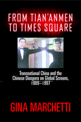

<body bgcolor="#FFFFFF" text="#000000" link="#0000FF" vlink="#CC0000" alink="#CC0000"><center><hr width="350" size="1" align="center" noshade>How media depictions of Chinese culture have changed, from the Tian'anmen Square uprising to the British return of Hong Kong to China<hr width="350" size="1" align="center" noshade><p><a href="https://cdcshoppingcart.uchicago.edu/Cart/ChicagoBook.aspx?ISBN=9781592132775&&PRESS=temple" target="_top">Buy this book!</a> | <a href="https://cdcshoppingcart.uchicago.edu/Cart/Cart.aspx?PRESS=temple" target="_top">View Cart</a> | <a href="https://cdcshoppingcart.uchicago.edu/Cart/Cart.aspx?PRESS=temple" target="_top">Check Out</a></p><p></p></center><!--none//--><h1>From Tian'anmen to Times Square</h1>
<H2>Transnational China and the Chinese Diaspora on Global Screens, 1989-1997</H2>
<h3>Gina Marchetti</h3>
<P>cloth 1-59213-277-4 $80.50, Jan 06, <FONT COLOR=#990033>Available</FONT>
<br>paper 1-59213-278-2 $30.95, Jan 06, <FONT COLOR=#990033>Available</FONT>
<br>Electronic Book 1-43990-877-X $29.95 <FONT COLOR=#990033>Available</FONT>
<BR> 320 pp
6x9
2&nbsp;figures 40&nbsp;halftones
</P><BLOCKQUOTE><I>"</i>From Tian'anmen to Times Square<i> exceeds all expectations I held for such a complex and deep subject as this. Marchetti provides a convincing but never reductive explanatory model to account for the development of distinctive cinema traditions undergoing permanent aesthetic revolution as the dislocating effects of contemporary global capitalism unfold in ways unanticipated by political dogma and totalizing theory. Marchetti's analytical depth and observational power demonstrates that she has a firm understanding of the rapid changes being wrought in China, Taiwan, Hong Kong, and overseas Chinese communities. This is a masterwork in film studies."</i>
<br>&#151<b>Darrell Y. Hamamoto</b>, University of California, Davis, and co-editor of <i><a href="1387_reg.html" target="_top">Countervisions: Asian American Film Criticism</a></i><i></I></BLOCKQUOTE>
<p>Global perceptions of China have changed dramatically since the massive student protests that took place in Tian'anmen Square in April 1989. The media spotlight trained on Beijing, and the international uproar over the events of that spring still shape the world's perceptions of the People's Republic and the ways that Chinese people, within and beyond China, see and portray themselves.
<p>In <i>From Tian'anmen to Times Square</i>, leading film scholar Gina Marchetti considers the complex changes in the ways that China and the Chinese have been portrayed in cinema and media arts since the Tian'anmen revolt. Drawing on her interviews with leading contemporary Chinese filmmakers, Marchetti looks at a wide range of work by Chinese and non-Chinese media artists working in China, Hong Kong, Taiwan, and Singapore and on transnational co-productions involving those places. Focusing on the intersections of race, ethnicity, gender, and sexuality on global screens, Marchetti traces the momentous political, cultural, social, and economic forces confronting contemporary media artists and filmmakers working within "Greater China."
<BR>&nbsp;<h2>Reviews</h2>
<p><i>"Surveying scores of films, Marchetti offers a panoramic view of Chinese cinemas and the diasporic linkages between them as they address key questions of the nation, identity, gender, and race in a transnational context. Allegory looms as a vital principle, exploring the politics of Tian'anmen Square on June 4, 1989 as the most recurring example and the transfer of Hong Kong back to China as the most fraught. Marchetti does a superb job of reading allegorically but also dialectically the many meanings of Chinese cinema."</i>
<br>&#151<b>Bill Nichols</b>, author of <i>Introduction to Documentary</i>, and Director of the Graduate Program in Cinema Studies, San Francisco State University
<p><i>"</i>From Tian'anmen to Times Square<i> presents itself as a clearly defined historical survey of cinematic and other visual media representation of China and the Chinese while at the same time it expands the geopolitical notion of mainland China proper. In addition to representing auteurs of the different Sinic regions&#151Wong Kar-wai, Edward Yang, Clara Law, etc.&#151Marchetti also introduces less well known but no less important directors such as Eric Khoo from Singapore. </i>From Tian'anmen to Times Square<i> is rich in historical and contextual information and astute in its critical interpretation of the films, at once synthesizing a wide array of scholarship and offering new ways of seeing."</i>
<br>&#151<b>David Leiwei Li</b>, Collins Professor of the Humanities, Department of English, University of Oregon
<p><i>"Using a variety of critical stances and incorporating political and social history, Marchetti offers engaging and astute analyses...Recommended."</i>
<br>&#151;<b><i>Choice</i></b>
<p><i>"[A] useful research tool."</i>
<br>&#151;<b><i>Multicultural Review</i></b>
<p><i>"Marchetti has a clear understanding of her subject matter and, as such, manages to fathom real analytical depth without being reductive."</i>
<br>&#151;<b><i>Screentrade Magazine</i></b>
<BR>&nbsp;<H2>About the Author(s)</H2>
<table><tr><td valign="top"><img src="/tempress/authors/1678_au.gif" height="90" width="75"></td><td width="100%" valign="middle"><p><b>Gina Marchetti</b> is Associate Professor in the School of Cinema and Photography at Ithaca College and a Visiting Professor at the University of Hong Kong. She is the author of <i>Romance and the "Yellow Peril": Race, Sex, and Discursive Strategies in Hollywood Fiction</i>, which won the 1995 Association for Asian American Studies National Book Award in Cultural Studies.</P></td></tr></table>
<BR><H2>Subject Categories</H2>
<p><A HREF="/tempress/cinema.html" TARGET="_top">Cinema Studies</a>
<BR><A HREF="/tempress/race.html" TARGET="_top">Race and Ethnicity</a>
<BR><A HREF="/tempress/asian_amer.html" TARGET="_top">Asian American Studies</a>
</p>
<p align="center"><a href="https://cdcshoppingcart.uchicago.edu/Cart/ChicagoBook.aspx?ISBN=9781592132775&&PRESS=temple" target="_top">Buy this book!</a> | <a href="https://cdcshoppingcart.uchicago.edu/Cart/Cart.aspx?PRESS=temple" target="_top">View Cart</a> | <a href="https://cdcshoppingcart.uchicago.edu/Cart/Cart.aspx?PRESS=temple" target="_top">Check Out</a></p><p><font face="Arial" size="1"><a href="copyright.html" onMouseOver="window.status='Web Copyright Policy';return true;" onMouseOut="window.status=''" title="Web Copyright Policy">&copy;</a> 2015 <a href="http://www.temple.edu" target="new" onMouseOver="window.status='Link to Temple University home page';return true;" onMouseOut="window.status=''" title="Link to Temple University home page">Temple University</a>. All Rights Reserved. http://www.temple.edu/tempress/titles/1678_reg.html</font></p>